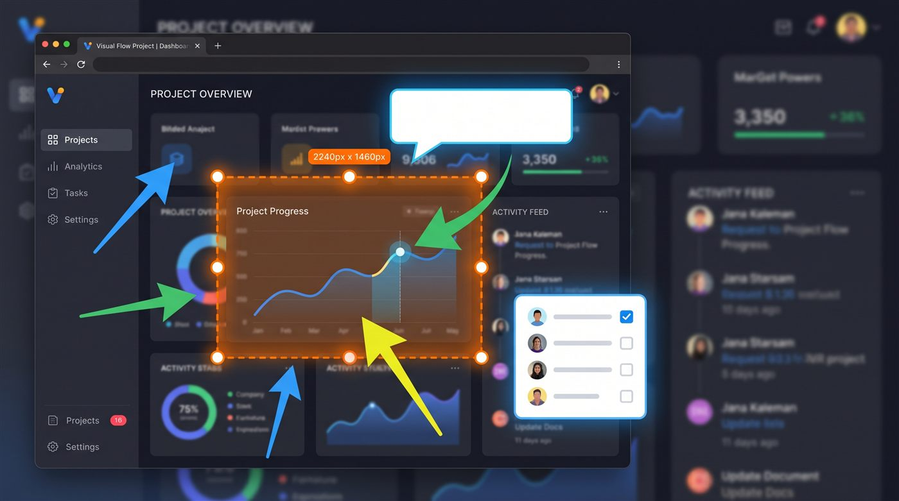
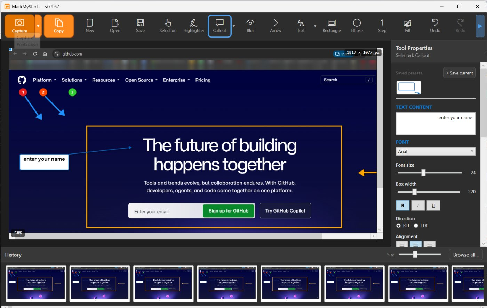

MarkMyShot is a fast Windows screenshot tool with annotation that feels effortless — arrows, text, blur, numbered steps and callouts. Built for how you actually explain things.
Free for 30 days • No account needed • Windows 10/11

One tool from capture to “here, look at this” — without a heavyweight editor.
Press PrintScreen, drag, done. Multi-monitor and mixed-DPI aware, with a frozen preview so nothing moves while you select.
Capture long pages and chats — scroll while MarkMyShot stitches everything into one tall image.
Clean annotations with full control of color, thickness and fill. Everything stays editable — move and restyle any time.
Hide names, emails and numbers with smooth blur, pixelation, or solid color. In the image you export, the hidden pixels are replaced — not covered over.
Turn any screenshot into a how-to: auto-numbered step markers and speech-bubble callouts with your text.
Save tool presets — your arrow, your highlight color, your callout style — and apply them in one click.
Every capture is saved and searchable. Copy several screenshots at once and paste them one by one with Win+V.
Unlimited-feeling undo that's saved with the file — close the app, reopen tomorrow, and keep pressing Ctrl+Z.
English, French, German and Hebrew (with full right-to-left support) — detected automatically.
Your screenshots never leave your computer. No account, no upload, no telemetry. That's not a promise buried in a policy — it's how MarkMyShot is built.
An actual, unretouched screenshot of MarkMyShot — captured by MarkMyShot. Numbered steps, arrows, a callout and a frame on a live page, with every object still editable, and your full capture history one click away.
Watch MarkMyShot in action — capture, annotate, done.

Start free — no payment details, no account. Pay once, and only if you decide it's worth it.
Secure checkout by Lemon Squeezy, a trusted payment platform used by thousands of software companies. They handle payment, tax and your invoice — card details never reach us. You can read more about them on their own site.
Windows 10 or Windows 11, 64-bit. No installation of extra runtimes needed — download, run, capture.
Never. Screenshots are saved to a folder you choose on your own disk, and that's the only place they exist. The app goes online for one thing only: checking your license key when you activate it.
The app switches to view-only. You can still open MarkMyShot and look through everything you captured, and your files stay on your disk in standard PNG format — nothing is deleted or locked away from other programs. Inside MarkMyShot, capturing, editing, saving, exporting and copying to the clipboard all require a license.
Yes. One payment, lifetime license, and updates released for version 1 are included. A future major version, if there ever is one, is not included.
Payment is handled by Lemon Squeezy, the seller of record, and any refund request is decided under their policy. That is exactly why the trial exists: 30 days, every feature unlocked, so you can be sure before you pay.
Yes — deactivate it in the app (License window) and activate on the new machine with the same key.